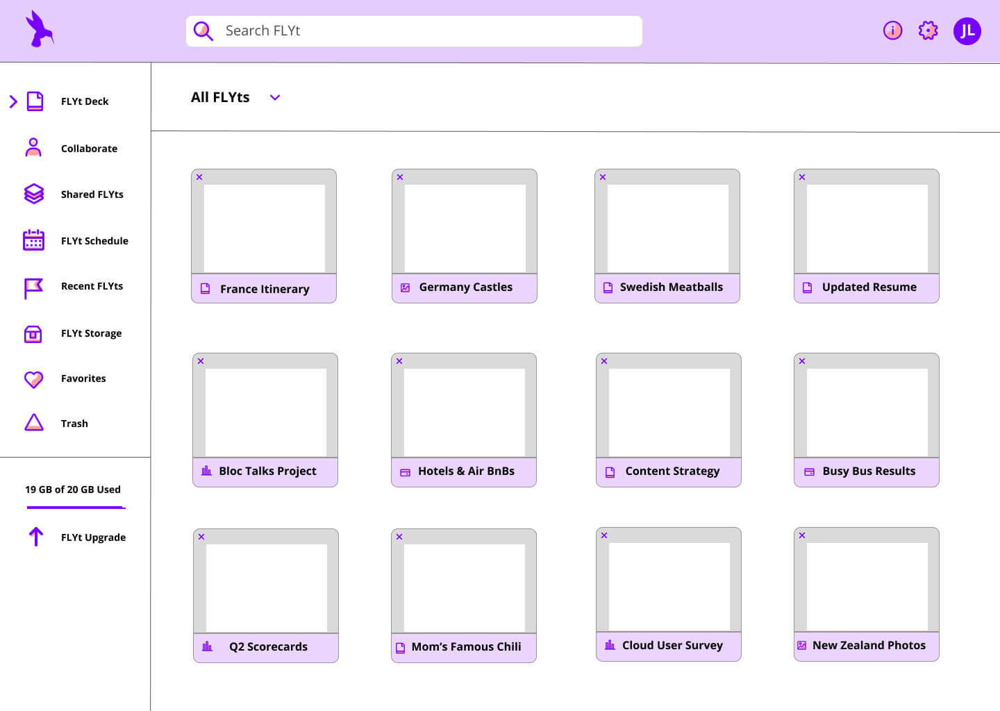
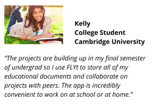
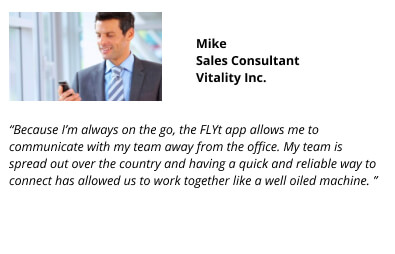
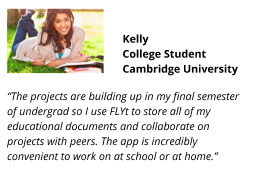
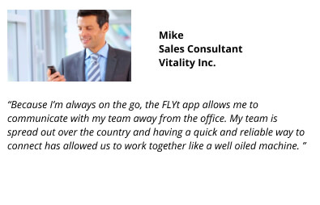

My original background screens were too colorful which overpowered the text and information on the page. Once I applied professional visuals, the creative design started to come together. I used icons from Sketch App Sources and visuals from Unsplash.com to enhance the appearance of the page. I enhanced the package features section with a grid and added details like rounding the edges of rectangles and was deliberate with the size, style, and amount of text.
I added professional images to break up the text information and improve the quality of the design. Then, I took ideas from existing cloud services to come up with a platform of my own. I wanted all users to be able to easily navigate the site and but also have the feel of a top of the line, elite platform. The foundation of the dashboard design was based on Google Drive. I took what I liked and added my own design to give the site its own distinct look and feel.
I wanted to add colors into the design without it being overwhelming. I am also a huge fan of themes and I liked using the Flight theme throughout the site. Terms such as FLYt Deck, FLYt Storage, Lounge Access, and names for types of documents like FLYt Demo and FLYt Grid enhanced the brand and theme and brought it altogether.

 


